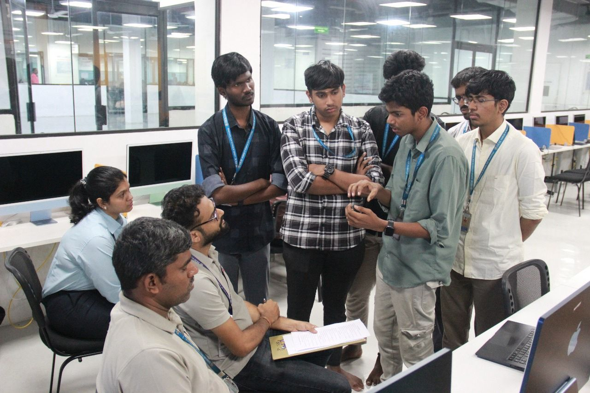
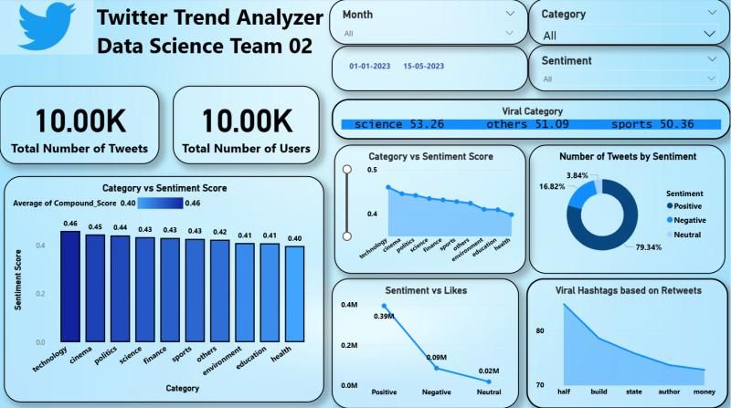
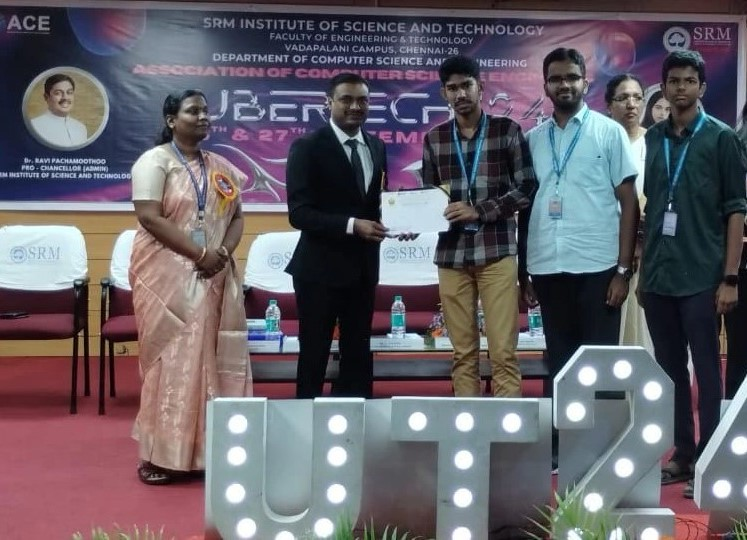
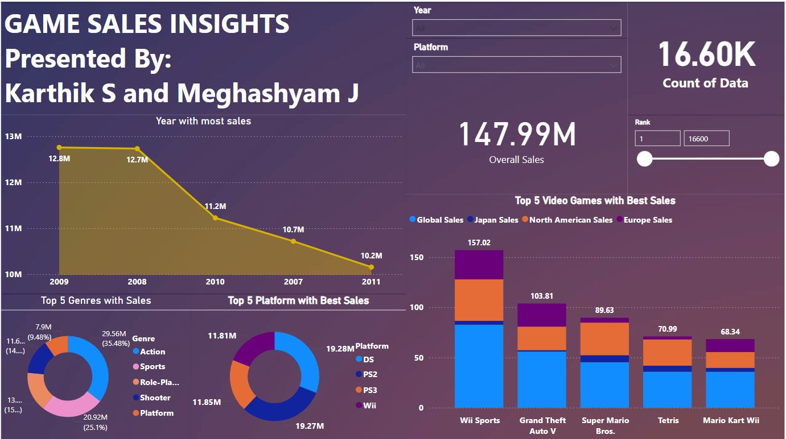

HTML · CSS · JavaScript · Flask · XGBoost · Scikit-learn · Power BI · VADER
- Led design and execution of an end-to-end logistics intelligence system integrating frontend, backend, ML, and analytics.
- Defined system architecture and distributed responsibilities to enable parallel development under hackathon constraints.
- Designed Flask backend to integrate predictive models, sentiment outputs, and analytics pipelines.
- Guided ML pipeline development using XGBoost and scikit-learn for logistics risk prediction.
- Oversaw news sentiment analysis to classify logistics-related events as favorable or unfavorable.
- Directed creation of an interactive world map dashboard visualizing ports, airports, and manufacturing hubs.
- Integrated ML outputs and sentiment insights into Power BI dashboards for decision-oriented analysis.

Python · Tkinter · SQL · Power BI
- Developed a full-stack analytics platform to address the lack of structured performance insights for freelancers.
- Built a Tkinter-based application integrating backend data processing with interactive dashboards.
- Engineered a backend pipeline to process raw data and feed Power BI dashboards via CSV integration.
- Designed KPI-driven visualizations to identify productivity trends and performance bottlenecks.
- Achieved Runner-up position for practical relevance and analytics clarity.
Python · VADER · Power BI · NLP · Data Pipelines · Predictive Modeling · EDA
- Led development of an NLP-driven Twitter trend analysis pipeline as Data Science Team Lead.
- Coordinated data ingestion, preprocessing, sentiment scoring, and visualization workflows.
- Defined data collection strategy and guided preprocessing decisions to improve signal quality.
- Applied VADER sentiment analysis and validated outputs through EDA.
- Designed Power BI dashboards to visualize sentiment shifts and topic trends.

Power BI · CSV · Data Modeling · Data Analytics · Data Visualization
- Designed a KPI-driven employee performance dashboard using Power BI.
- Cleaned and modeled structured CSV data to evaluate productivity and efficiency.
- Enabled comparative analysis across teams for management-level insights.
- Awarded Winner for clarity of insights and effective KPI selection.

Tkinter · CSV · Power BI· Data Visualization · Data Analytics
- Analyzed global video game sales data across genres, regions, and publishers.
- Cleaned and modeled CSV data for comparative and time-based analysis.
- Designed dashboards highlighting market trends and growth opportunities.
- Secured 3rd place for insight clarity and visualization effectiveness.
